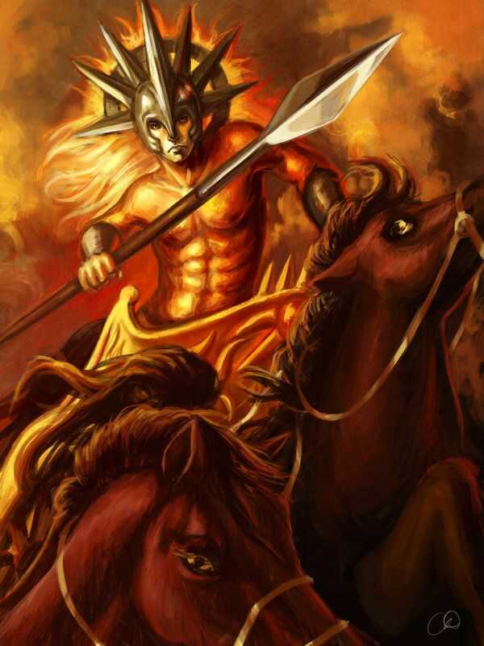
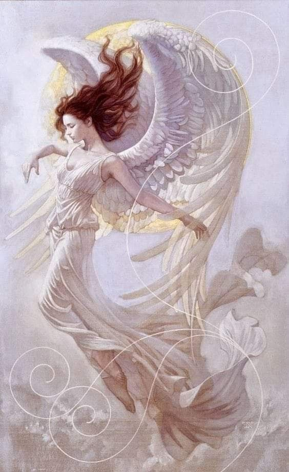

ELIO, IL SOLE FIAMMEGGIANTE
Nella mitologia greca era figlio del Titano Iperone e di Teia, fratello de Selene, la luna, e di Eos, l'aurora. Era la personificazione del sole e per questo veniva rappresentato come un giovane bellissimo dai capelli biondi. Aveva il compito di portare la luce agli uomini e a questo scopo percorreva il cielo da Oriente ad Occidente a bordo di ococchio d'oro trainato da guattro cavalli mentre il ritorno, da occidente ad oriente, lo percorreva a bordo di una nave d'oro (costruita da Efesto). Elio era considerato nemico dei malfattori perché vedeva ogni cosa ed il suo nome era invocato nei giuramenti. Sposò l'Oceanina Perseide da cui ebbe Eete (padre di Medea) e Cice e numero altri figli.
Elio possedeva Sicilia sette mandrie di buoi e sette greggi di agnelli che comprendevano ciascuna cinquanta capi che rimanevano sempre tale e quali vale a dire nè morivano o si moltiplicavano. Questo probabilmente era legato al fatto che simboleggiavano l'anno freco formato da cinquanta settimane di sette giorni a sette notti. Il dio era venerato ovunque ma particolarmente a Rodi, a lui sacra, dove esisteva una sua famosissima statua, il Colosso di Rodi alta trentadue metri e posta a cavalcioni all'ingresso del porto fra le cui gambe potevano passare le navi a vele spiegate.

SELENE, LA DEA DELLA NOTTE
La Luna era la sorella di Elio. La sua incredibile bellezza affascinava gli uomini, che le dedicavano poesie e canzoni, e la adoravano tanto quanto suo fratello, anche se lei suscitava sempre passioni diverse. Oltre a queste virtù, la Luna offriva sicurezza ai viaggiatori e alle greggi con tenue luminosità, soprattutto a questi ultimi dagli attacchi di animali selvatici. Quando una notte mancava, era di sua spontanea volontà; smetteva di uscire per punire gli uomini per qualche evento che l'aveva turbata. Influenzava anche le maree e per questo motivo veniva invocata dai pescatori che si facevano in mare, per ottenere la loro inestimabile protezione. In generale, era considerata rappresentante di tutte le influenze che la notte esercita sulla natura. Ebbe l'amore con Pan, il figlio di Ermes, che la sedusse travestito da agnello e in seguito le regalò i due buoi che tirano dal carro su cui è sempre rappresentata. Ma il suo amato famoso era il pastore Endimione. Il giovane dormiva una notte all'ingresso di una grotta sul monte Lamos, vicino a Mileto, e Selene lo vide. Non riuscì a trattenersi e scese; poi si unì a lui in un lungo abbraccio.
Quando fini la notte, andò da Zeus per chiedergli di concedere al suo amante quello che chiedeva; gli diedi, che se e quando lo intervistò, gli chiese due eternità: la giovinezza e il sonno. E se rimase, addormentato ed eternamente giovane. Ogni notte, la Luna si avvicina dolcemente e accarezza il suo innamorato che dorme. Nonostante ciò, da questa relazione nacquero cinquanta figlie. Si diceva che i mortali invocassero la Luna nelle loro storie d'amore. La Luna ha un fascino capace di incantare chi si trova fragile per un ravvicinato incontro passionale, ed è fonte permanente di ispirazione per gli artisti.

EOS, L'AURORA
Aurora è la dea dell'aurora. Il mito di Aurora è parallelo a quello di Eos, che è la dea greca dell'aurora, e di Usas, la divinità vedica speculare. La leggenda greca narra che Aurora sia la figlia di Titano, mentre sole e luna sono i suoi fratelli. A sua volta, Aurora ha quattro figli, che sono i venti: Borea, Euro, Noto, Zefiro. Secondo la leggenda, la dea Aurora si rinnova ogni mattina, all'alba. Ella vola nel cielo, ed in questo modo sparge luce ed annuncia al mondo il mattino.
Secondo la leggenda, Aurora sposò Titone, e ottenne da Giove la possibilità di esprimere un desiderio. Ella chiese l'immortalità, ma dimenticò di chiedere la giovinezza eterna. Aurora è citata anche nel testo della Divina Commedia. Si trova nel Canto II del Purgatorio, viene chiamata "concubina del Titone antico" (dove "antico" sta per vecchio). Nella mitologia greca, la dea dell'aurora si chiama Eos ed è figlia di Iperione e Tema, i due titani. Eos ebbe come amante anche Zeus, nonché il dio greco della guerra, Ares. Afrodite, scandalizzata per il fatto che Aurora fosse andata col suo amante Eros, la punì. Nell'opera di Omero Eos viene citata e viene comunemente chiamato "dea dalle rosse dita" per via del colore che sparge nel cielo all'alba.

IRIS, LA MESSAGGERA DEGLI DEI
Iris era la figlia di Taumante ed Electra. Anche sorella delle Harpie. I suoi compiti erano simili a quelli di Ermes, messaggera, ma egli era solito accompagnare Hera in modo che egli era incaricato di preparare il suo bagno, di sistemare i suoi capelli e stava sempre accanto al trono della dea. Oltre ad essere molto veloce a fare le sue commissioni, i vestiti che indossava abitualmente erano quelli adatti a favorire il suo lavoro: indossava sandali d'oro alati e ali sulla schiena, indossava abiti leggeri e vaporosi, i capelli legati con un nastro e volavano veloci come i venti, e a volte aiutati da loro. Aveva un bastone sottile con due ali che era il simbolo della pace. Ogni volta che passava, Elio illuminava la tunica - che era fatta di minuscole goccioline d'acqua- e così potevano vedere i sette colori dello spettro. Zeus aveva fatto un accordo direttamente con Ares, e per questo entrava e usciva dal Tartaro senza permesso, perché aveva un compito molto importante: doveva portare l'acqua dello Stige in un calice quando qualche immortale doveva giurare. Oltre ai suoi compiti specifici, era molto disponibile con tutti gli dei. Se un ospite arrivava all'Olimpo, lei scioglieva i cavalli e lo accoglieva con prelibatezze e bevande fresche. Così l'immagine iniziale che i viaggiatori hanno ricevuto era sempre eccellente. Nella guerra di Troia, quando Afrodite fu ferita, Iris corse in suo aiuto e la portò sul carro di Ares. Una volta al sicuro, guidò lei stessa i cavalli per proteggere la dea. Oltre ad essere molto disponibile si rivelò essere molto coraggioso, per entrare nel mezzo di una guerra bisognava avere fegato. Era anche gentile con i mortali.